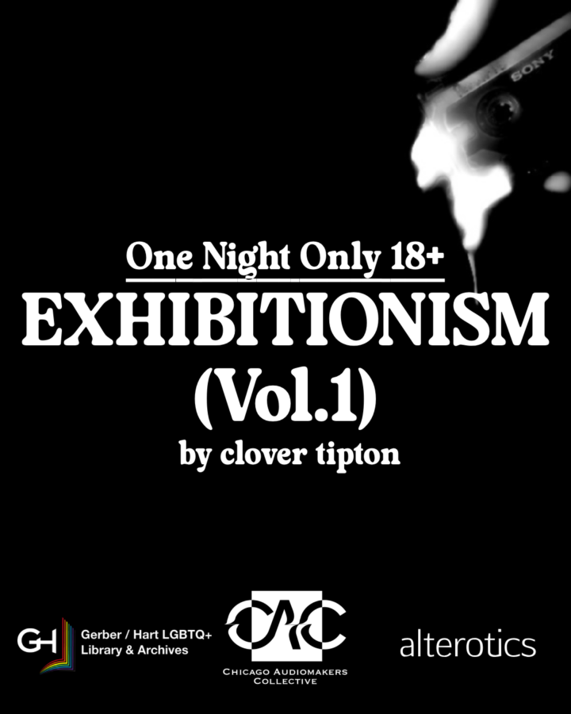

Exhibitionism Vol.1
Exhibitionism by Clover Tipton An aural art installation about Queer debauchery with visual stimulation provided by alterotics.
This installation with Chicago Audiomakers Collective explores intimacy, sex, and identity in the vein of Mermaid Palace’s The Heart, LOVE+RADIO’s The Secrets Hotline, and audio erotica like Dipsea.
In line with the theme of exhibitionism, those entering the listening area will be recorded on video while listening to the installation.
Recording: Please note that the video will be recorded within the listening area only. The artist will be utilizing the film in a future work in conjunction with the present installation. Audio will be captured with the video, but it is not planned for use. The piece will not be uploaded online, nor will it be utilized in conjunction with any AI editing or learning. Participants will not be explicitly identified or credited in future work, though they may be recognized by their images.